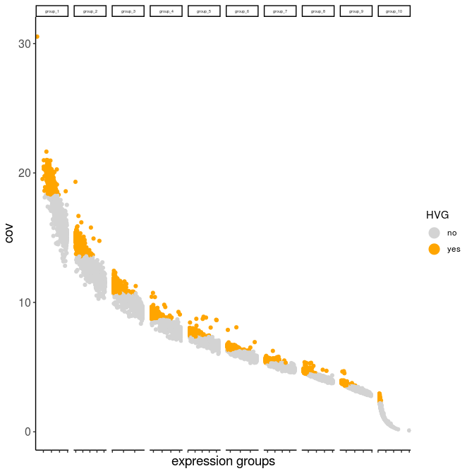
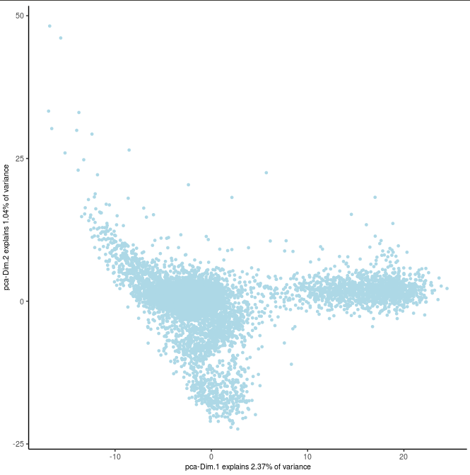
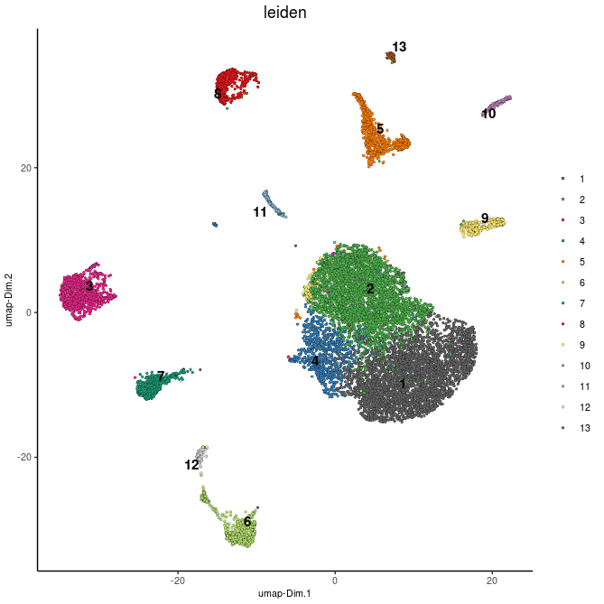
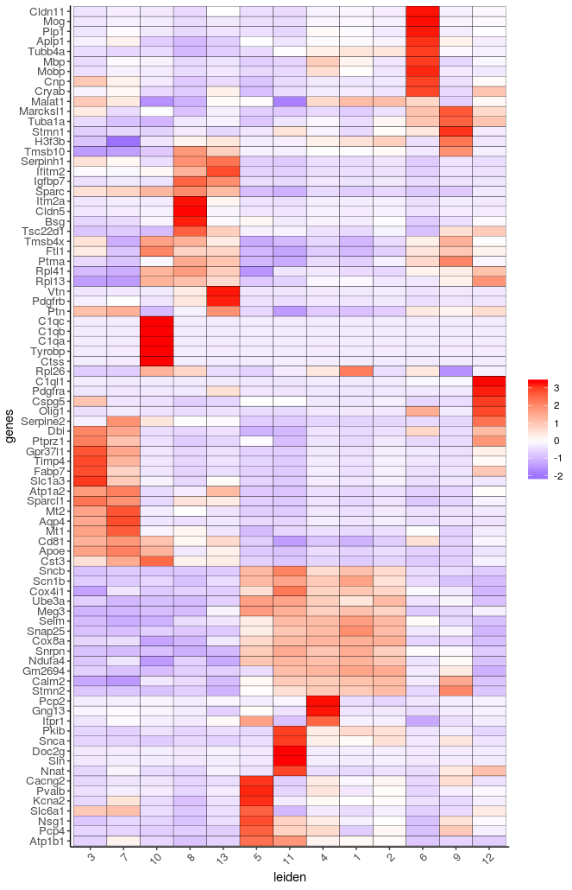
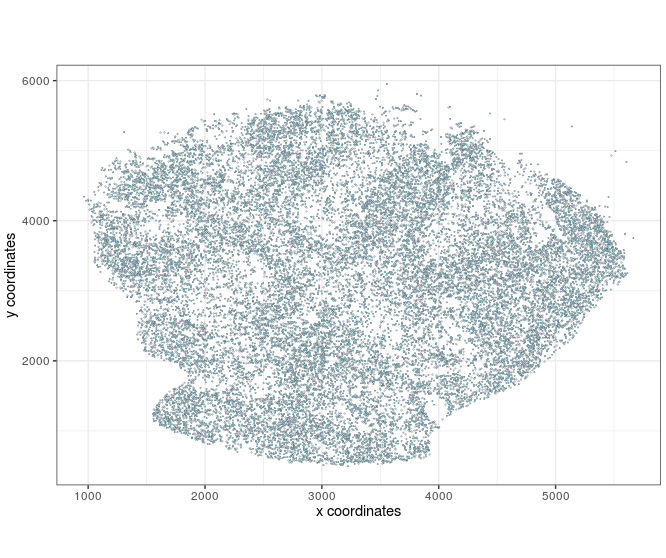
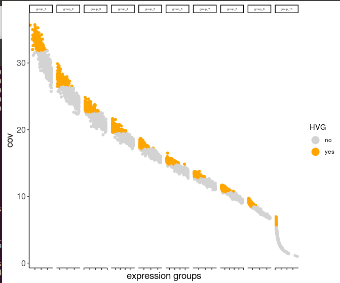
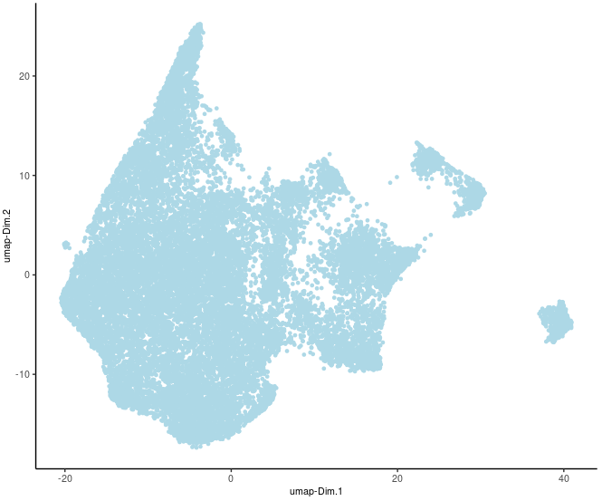
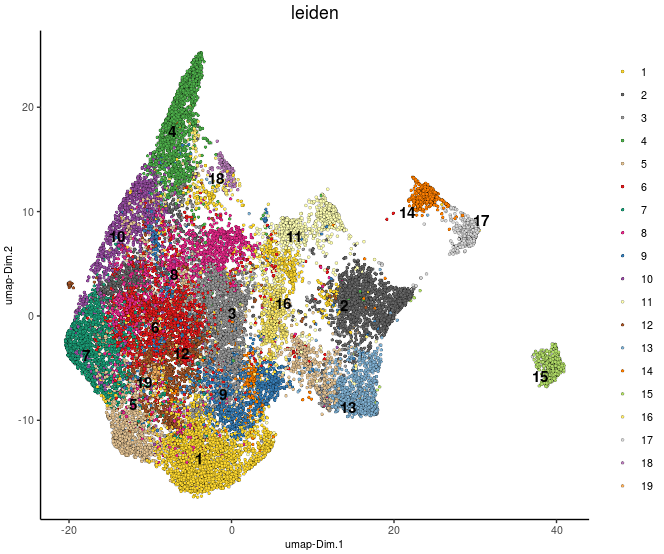
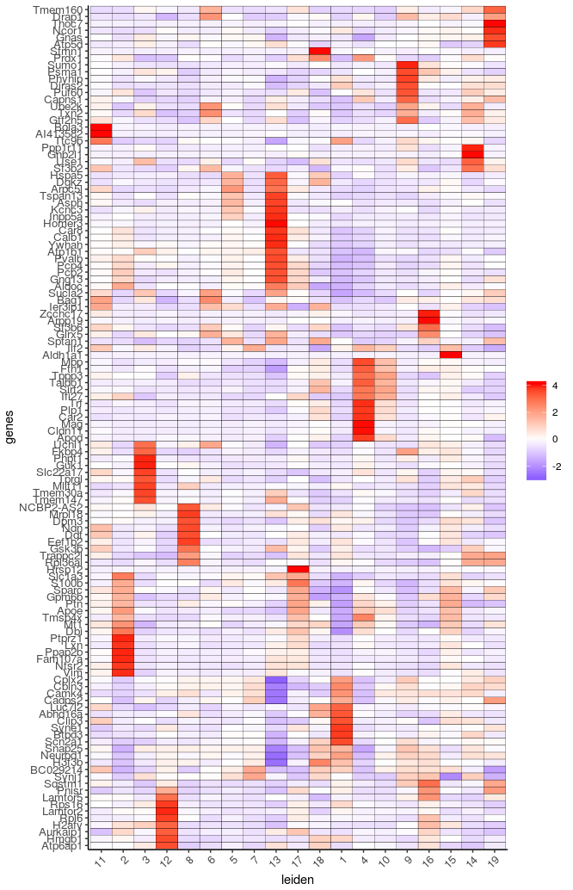
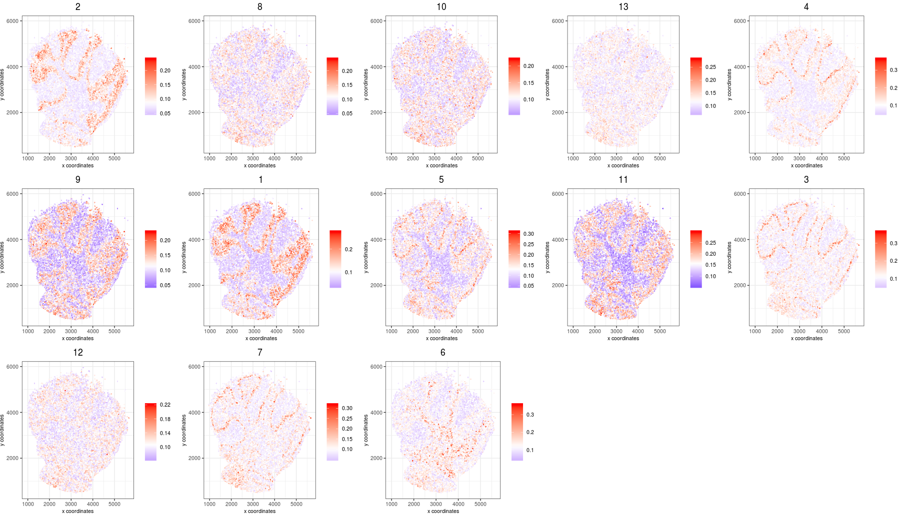

slideSeq Dataset - Part 1. Cell Type Enrichment
Cell type enrichment analysis
This section will illustrate the cell type enrichment analysis. We will start with the scRNAseq dataset, perform clustering to find cell types, show how to generate cell type signature matrix to be used for cell type enrichment. Finally, we will apply on the slideSeq cerebellum dataset to deconvolve cell types in individual beads.
In the analysis of scRNAseq, the input is the count matrix (single-cell). No cell type information is needed.
Analysis of scRNAseq
Giotto can be used to analyze scRNAseq as well. The scRNAseq comes from http://mousebrain.org/ from the the Linnarsson Lab. We will use the cerebellum portion of the atlas in counts.
library(Giotto)
#data loading
data_folder = '.'
expr = read.table(paste0(data_folder,'/','l1.cerebellum.txt'))
cell_names = fread(paste0(data_folder,'/','l1.cerebellum.cells.2.txt'), header = F)
gene_names = fread(paste0(data_folder,'/','l1.cerebellum.genes.txt'), header = F)
#remove duplicate gene names
gene_names[, dupl := duplicated(V1)]
gene_names[, newV1 := ifelse(dupl == F, V1, paste0(V1,'_',1:.N)), by = V1]
colnames(expr) = cell_names$V1
rownames(expr) = gene_names$newV1
#normal giotto steps
cere_rnaseq <- createGiottoObject(raw_exprs = expr)
cere_rnaseq <- filterGiotto(gobject=cere_rnaseq, gene_det_in_min_cells=30, min_det_genes_per_cell=300)
cere_rnaseq <- normalizeGiotto(gobject = cere_rnaseq, scalefactor = 10000, verbose = T)
cere_rnaseq <- addStatistics(gobject = cere_rnaseq)
cere_rnaseq <- calculateHVG(gobject = cere_rnaseq, method = 'cov_groups', zscore_threshold = 0.5, nr_expression_groups = 10, reverse_log_scale=T)
gene_metadata = fDataDT(cere_rnaseq)
featgenes = gene_metadata[hvg == 'yes']$gene_ID
cere_rnaseq <- adjustGiottoMatrix(gobject = cere_rnaseq, expression_values = c('normalized'), batch_columns = NULL, covariate_columns = c('nr_genes', 'total_expr'), return_gobject = TRUE, update_slot = c('custom'))
cere_rnaseq <- runPCA(gobject = cere_rnaseq, expression_values = 'custom', genes_to_use = featgenes, scale_unit = F)
signPCA(cere_rnaseq, genes_to_use = featgenes, scale_unit = F, scree_ylim = c(0,1.3))
plotPCA(gobject=cere_rnaseq)
cere_rnaseq <- runUMAP(cere_rnaseq, dimensions_to_use=1:25, n_components=2)
#clustering step
cere_rnaseq<-createNearestNetwork(gobject=cere_rnaseq, dimensions_to_use=1:25, k=25)
cere_rnaseq<-doLeidenCluster(gobject=cere_rnaseq, resolution=0.5, n_iterations=10, name="leiden", python_path="/n/app/python/3.6.0/bin/python3")
#find marker genes
library(scran)
markers_scarn=findMarkers_one_vs_all(gobject=cere_rnaseq, method="scran", expression_values="custom", cluster_column="leiden", min_genes=5)
markergenes_scran = unique(markers_scarn[, head(.SD, 8), by="cluster"][["genes"]])
plotMetaDataHeatmap(cere_rnaseq, expression_values="custom", metadata_cols=c("leiden"), selected_genes=markergenes_scran)
plotUMAP(gobject=cere_rnaseq, cell_color="leiden", point_size=1)
calculateHVG (highly variable genes)

plotPCA

plotUMAP with leiden clusters

Signature matrix from scRNAseq

Legend:
5: GABAergic interneuron, 8: endothelial cells 1, 13: endothelial cells 2, 10: microglia/macrophages,
3,7: astrocyte-1 and astrocyte-2 or Bergmann Glia, 11: unipolar brush neurons,
1,2: neurons (granule), 4: Punkinje cells
9: Golgi cells, 6: oligodendrocytes, 12: OPC
Slide-seq analysis
We will use the unfiltered cerebellum count matrix.
#load slideseq dataset
bead_positions <- fread(file="slideSeq/2019_slideseq_cerebellum/cell_locations/BeadLocationsForR.csv")
expr_matrix<-fread(file="slideSeq/2019_slideseq_cerebellum/raw_data/MappedDGEForR.csv")
expr_mat = as.matrix(expr_matrix[,-1]);rownames(expr_mat) = expr_matrix$Row
#normal giotto steps
Slide_test <- createGiottoObject(raw_exprs = expr_mat, spatial_locs = bead_positions[,.(xcoord, ycoord)])
#filter based on minimum number of cells and genes, and then remove mitochondrial genes
filterCombinations(Slide_test, expression_thresholds = c(1, 1), gene_det_in_min_cells = c(20, 20, 20), min_det_genes_per_cell = c(20, 32, 100))
Slide_test<-filterGiotto(gobject=Slide_test, gene_det_in_min_cells=20, min_det_genes_per_cell=20)
non_mito_genes = grep(pattern = 'mt-', Slide_test@gene_ID, value = T, invert = T)
non_mito_or_blood_genes = grep(pattern = 'Hb[ab]', non_mito_genes, value = T, invert = T)
Slide_test = subsetGiotto(gobject = Slide_test, gene_ids = non_mito_or_blood_genes)
visPlot(gobject = Slide_test, point_size=0.5)
#normal giotto steps
Slide_test <- normalizeGiotto(gobject = Slide_test, scalefactor = 2000, verbose = T)
Slide_test <- addStatistics(gobject = Slide_test)
Slide_test <- calculateHVG(gobject = Slide_test, method = 'cov_groups', zscore_threshold = 0.5, nr_expression_groups = 10)
gene_metadata = fDataDT(Slide_test)
featgenes = gene_metadata[hvg == 'yes']$gene_ID
Slide_test <- adjustGiottoMatrix(gobject = Slide_test, expression_values = c('normalized'), batch_columns = NULL, covariate_columns = c('nr_genes', 'total_expr'), return_gobject = TRUE, update_slot = c('custom'))
Slide_test <- runPCA(gobject = Slide_test, expression_values = 'custom', genes_to_use = featgenes, scale_unit = F)
plotPCA(gobject=Slide_test)
Slide_test <- runUMAP(Slide_test, dimensions_to_use=1:9, n_components=2)
plotUMAP(gobject=Slide_test, point_size=1)
#clustering steps
Slide_test<-createNearestNetwork(gobject=Slide_test, dimensions_to_use=1:9, k=20)
Slide_test<-doLeidenCluster(gobject=Slide_test, resolution=0.5, n_iterations=10, name="leiden", python_path="/n/app/python/3.6.0/bin/python3")
plotUMAP(gobject=Slide_test, cell_color="leiden", point_size=1)
library(scran)
markers_scarn=findMarkers_one_vs_all(gobject=Slide_test, method="scran", expression_values="custom", cluster_column="leiden", min_genes=5)
markergenes_scran = unique(markers_scarn[, head(.SD, 8), by="cluster"][["genes"]])
plotMetaDataHeatmap(Slide_test, expression_values="custom", metadata_cols=c("leiden"), selected_genes=markergenes_scran)
visPlot after subset giotto steps

calculateHVG (slideseq)

plotUMAP of slideSeq before clustering

Leiden clustering

plotMetaDataHeatmap

Cell type enrichment integrating scRNAseq and slideseq
#=====CELL TYPE ENRICHMENT SECTION=============
#create rank-based gene signature matrix (scRNAseq)
rank_matrix = makeSignMatrixRank(sc_matrix = cere_rnaseq@raw_exprs, sc_cluster_ids = pDataDT(cere_rnaseq)$leiden, gobject = Slide_test)
#cell type enrichment step
Slide_test = createSpatialEnrich(Slide_test, sign_matrix = rank_matrix, enrich_method = 'rank', name = 'rank')
cell_types = colnames(rank_matrix)
#visualize cell type enrichment result
spatCellPlot(gobject = Slide_test, spat_enr_names = 'rank', cell_annotation_values = cell_types, cow_n_col = 3,coord_fix_ratio = NULL, point_size=1.0, point_border_stroke=0)
plotMetaDataCellsHeatmap(gobject = Slide_test, metadata_cols = 'leiden', value_cols = cell_types, spat_enr_names = 'rank')
Single-spot spatial Cell type enrichment plot (spatCellPlot)

In the above plot, the title of each panel is the cell type ID (see below). Plot shows the enrichment of cell type in each panel.
Legend:
5: GABAergic interneuron, 8: endothelial cells 1, 13: endothelial cells 2, 10: microglia/macrophages,
3,7: astrocyte-1 and astrocyte-2 or Bergmann Glia, 11: unipolar brush neurons,
1,2: neurons (granule), 4: Punkinje cells
9: Golgi cells, 6: oligodendrocytes, 12: OPC